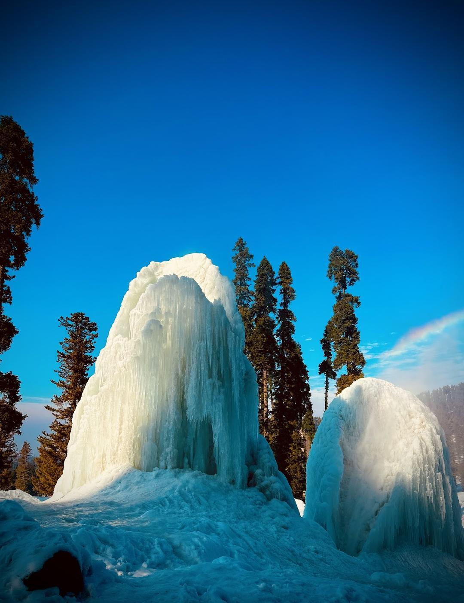
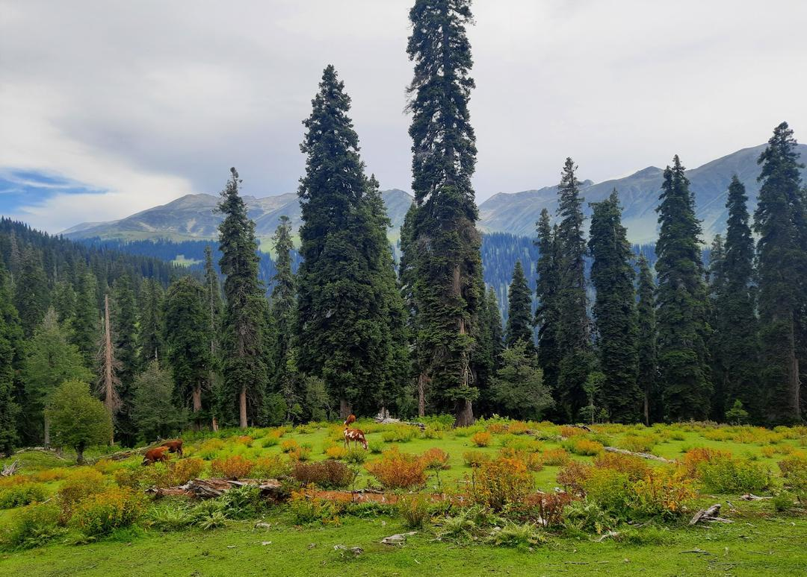
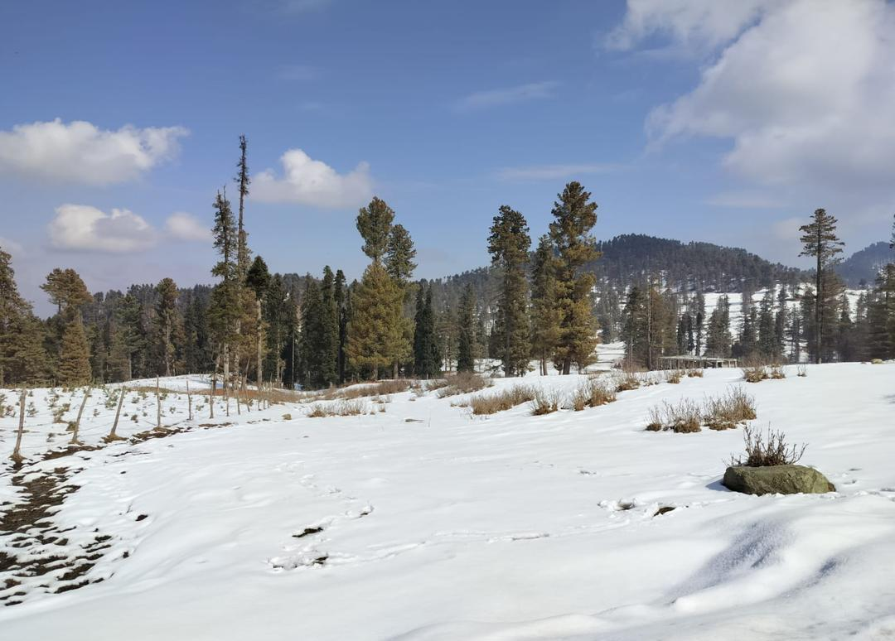
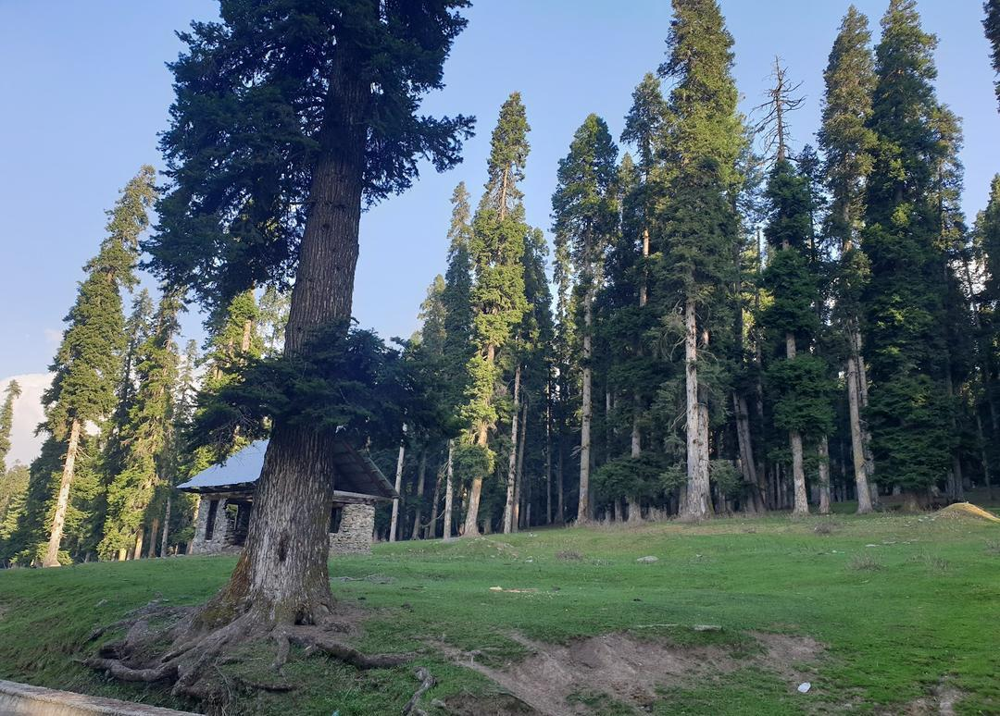

Shahid Mir
Owner & Curator"As the owner and custodian of this sanctuary, my mission is to share the authentic soul of Gogaldara while preserving its pristine wilderness for generations to come."
Welcome to The Gogaldara — By Shahid Mir
I am Shahid Mir, owner and creator of The Gogaldara portal. I welcome you to one of Kashmir's most enchanting and untouched mountain sanctuaries, located in the Tangmarg tehsil of Baramulla district, roughly 13 km from Tangmarg town.
For generations, Gogaldara was a quiet pastoral haven known only to local Gujjar herders and mountain trekkers. Today, it has captivated travelers across the world through its sensational 35-foot natural icicle wall at Chill Point, where freezing sub-zero winter winds turn freshwater seepages into magnificent ice sculptures.
Whether you are visiting in peak winter for sledging and icicle photography, or in summer for the wildflower meadows and steaming saffron Kahwa by a wood-fired hearth, I have curated every detail on this portal to help you explore responsibly, safely, and comfortably.
Highlights of The Gogaldara
From the geological winter phenomenon at Chill Point to aromatic summer meadows and local hearths, experience authentic Kashmir.
Chill Point (Gogaldara)
During peak winter (Dec - Feb), fresh mountain runoffs freeze into vertical crystalline pillars extending up to 35 feet high, creating an unforgettable ice canyon.

Alpine Pine Ridges
Lush terraced slopes, grazing pastoral flocks, and pine tree canopies make Gogaldara an idyllic escape for quiet mountain walks, solitude, and landscape photography.
Gogaldara Valley Panorama
Experience true Kashmiri hospitality in the tranquil mountain highlands. Clean spring waters, snowy slopes, and pure untouched wilderness.
Photographs of Gogaldara & Chill Point
Authentic photographs captured across Gogaldara and Chill Point in Tangmarg, Baramulla. Click any picture to zoom and inspect in high-resolution lightbox.
Himalayan Foothills & Pines
Click to Zoom
Natural Ice Dome & Pines
Click to ZoomTwin Frozen Ice Columns
Click to Zoom
Seepage Ice Sheet
Click to Zoom
Silver Fir & Deodar Slopes
Click to Zoom
Ice Mound & Fir Woods
Click to Zoom
Crystalline Ice Column
Click to ZoomChill Point Frozen Landscape
Click to ZoomWatch Real Footage from Chill Point
Experience the authentic sound and atmosphere of visitors enjoying the frozen ice cliffs and snow trails at Gogaldara Chill Point in Tangmarg.
When Should You Visit Gogaldara?
Each season paints Tangmarg in a distinctive color palette. Plan according to what you wish to see.
Winter Magic (Dec – Feb)
Witness the colossal 35-ft icicles at Chill Point, enjoy sledge rides down powder snow slopes, and bundle up in traditional pherans with hot tea.
Spring & Summer (Mar – Aug)
Melted snow leaves emerald green carpets of grass, blooming mountain wildflowers, cool breezes, and peaceful picnic spots by crystal brooks.
Golden Autumn (Sep – Nov)
Crisp mornings, golden amber hues on deciduous mountain shrubs, peaceful uncrowded trails, and harvest season in nearby orchards.
Ready to Discover The Gogaldara?
Explore our comprehensive travel guide for exact distances, taxi rates from Tangmarg, clothing guidelines, photo galleries, and community reviews.
Gogaldara Chill Point Viral Reels
Swipe through authentic short video clips of the 35-foot frozen icicle marvel, snow sledging, and pine slopes.
Witness the frozen seepage wall towering high in Tangmarg sub-zero freeze.
Watch on Instagram
Silent Himalayan snow trails surrounded by century-old fir trees.
Watch on InstagramNatural crystalline spires standing 35 feet above Tangmarg ground.
Watch on Instagram
Steaming saffron kahwa around glowing wood-fire hearths.
Watch on Instagram